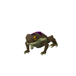
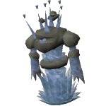
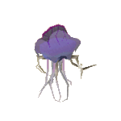
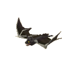
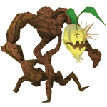

")
Seelenreise
Nur RuneScape-Mitglieder können auf 'Seelenreise' gehen. Bitte werdet Mitglied, damit ihr auf dieses Feature zugreifen könnt.
Eine der Belohnungen (die dreifache Menge Siegel als Beute) hält nur eine gewisse Zeit vor. Dabei zählt die Zeit, die ihr im Spiel verbringt. Wenn ihr euch ausloggt, hält der Timer an und startet beim nächsten Einloggen wieder.
Einführung

Die Druiden benutzen beseelte Obelisken, um in die Welt der Seelen - die Heimat der Vertrauten - zu reisen. Nur dort gesammelte Splitter können zum Durchwirken der Beschwörungsbeutel benutzt werden. Da es in letzter Zeit (dank der Abenteurer) so viele neue Beschwörer gab, waren die Splitter nie begehrter!
Seid ihr 'seelisch' für diese Aufgabe bereit? Wollt ihr euch mit den Regeln 'vertraut' machen? Habt ihr gemerkt, dass die letzten beiden Fragen Wortwitze sein sollten? Wenn ihr all diese Fragen mit 'Ja' beantwortet habt, könnt ihr euch bald tolle Belohnungen für Beschwörung verdienen.
Voraussetzungen
Ihr müsst keine Mindestanforderungen erfüllen, um den Druiden zu helfen, aber wenn ihr Abenteuer wie Das Wettangeln oder Unterirdischer Pass abgeschlossen habt, könnt ihr mehr Beschwörungs-Obelisken erreichen - von denen jeder plötzlich beseelt zu funkeln beginnen könnte.
Erste Schritte

Eure Seele nimmt in der Welt der Seelen die Form eines Vertrauten an, damit ihr nicht auffallt. Euer Ziel ist es, so viele unbeseelte Splitter wie möglich aufzusammeln. Die Splitter liegen überall auf dem Boden verstreut, und ihr könnt bis zu sechzig davon mit nach RuneScape zu Volperplex nehmen.
| Die Gestalt eurer Seele | Eure sofortigen Gegner | ||
 Haus-Schnecke |
 Zirkuskröte |
 Wüstenwurm |
|
 Misthaufen-Monster |
 Geysir-Titan |
 Kampf-Schildkröte |
|
 Riesen-Schlingchilla |
 Hydra |
 Karamthulhu-Potentat |
|
|
 Kluft-Spinnwerker |
 Obsidian-Golem |
 Vampir-Fledermaus |
|
 Rüpel-Rübe |
Misthaufen-Monster |
Haus-Schnecke |
|
 Seelen-Coraxatrise |
 Seelen-Kyatt |
 Seelen-Larupiar |
|
|
Seelen-Larupiar |
 Seelen-Wolf |
 Kluft-Wüter |
|
 Komische Pflanze |
 Packochse |
 Heißhunger-Heuschrecke |
|
 Adamant-Minotaurus |
 Feuerfalter |
 Lava-Titan |
|
 Riesen-Ent |
 Biber |
 Feuer-Titan |
|
 Eis-Titan |
 Feuerfürst |
 Seelen-Tz-Kih |
|
|
Packochse |
 Albino-Ratte |
 Seelen-Kobra |
|
Es gehört allerdings ein wenig mehr dazu, als nur Dinge vom Boden aufzuheben. Sobald ihr die Welt der Seelen betretet, werdet ihr von zwei verschiedenen Arten von Vertrauten verfolgt, die sofort erkannt haben, dass ihr ein Fremdkörper seid. Je länger ihr in der Welt der Seelen bleibt, desto mehr Vertraute werden eure Tarnung durchschauen.

Wenn ihr euch zu nahe an einen der oben angezeigten gegnerischen Vertrauten heranwagt, stören sie eure Konzentration, wodurch eure Präsenz in der Welt der Seelen geschwächt wird. Eure Konzentration könnt ihr an der Anzeige links ablesen. Sobald eure Konzentration auf 0 sinkt, verliert eure Seele den Halt und kehrt wieder zu eurem Körper auf RuneScape zurück. Ihr landet wieder neben Volperplex, mit den unbeseelten Splittern im Gepäck, die ihr aufgesammelt habt. Wie viel Konzentration ihr noch übrig habt, seht ihr auch an der Farbe, die von eurer Gestalt in der Welt der Seelen ausgeht.

Bei der Seelenreise muss man sich voll konzentrieren, daher könnt ihr maximal 20 Minuten lang in der Welt der Seelen bleiben. Falls ihr die Vertrauten euch vorher die Konzentration rauben oder ihr alle 60 Splitter findet, ist die Reise noch früher vorbei. Es dauert außerdem eine Weile, bis ihr euch von eurer Reise erholt, daher könnt ihr Volperplex nur einmal pro Woche helfen.
Belohnungen
Zur Belohnung für eure Mühen gibt euch Volperplex entweder einen Segen oder Materialien für die Herstellung von Beschwörungsbeuteln. Wenn ihr euch für den Segen entscheidet, erhaltet ihr vierzig Spielminuten lang die dreifache Menge an Siegeln als Beute. Falls ihr die Materialien wählt, bekommt ihr eine Handvoll zufällig ausgewählter Gegenstände für die Beutelherstellung. Die Art und Menge der Gegenstände ist abhängig von eurer derzeitigen Stufe in Beschwörung und der Anzahl der unbeseelten Splitter, die ihr in der Welt der Seelen gesammelt habt. Falls ihr die Welt der Seelen betretet, bevor ihr eure Belohnung für die letzte Seelenreise entgegengenommen habt, könnt ihr maximal 30 unbeseelte Splitter von eurer letzten Reise behalten. Alle überschüssigen Splitter gehen verloren. Daher ist es eine gute Idee, die Belohnung vorher abzuholen. Volperplex warnt euch aber, wenn er noch Splitter vom letzten Mal für euch aufbewahrt.
Entwicklerteam
Entwicklung: Marion C
Grafik: Alex R, Kris F, Mike W, Samantha H
QS: Liam H, Thomas H
Audio: Grace D

Weitere Artikel in Spaß für zwischendurch
|
|
|
Weiterführende Informationen Wenn euch dieser Artikel nicht weitergeholfen hat, könnt ihr in den folgenden Kapiteln der RuneScape-Webseite mehr Informationen finden:
|
|